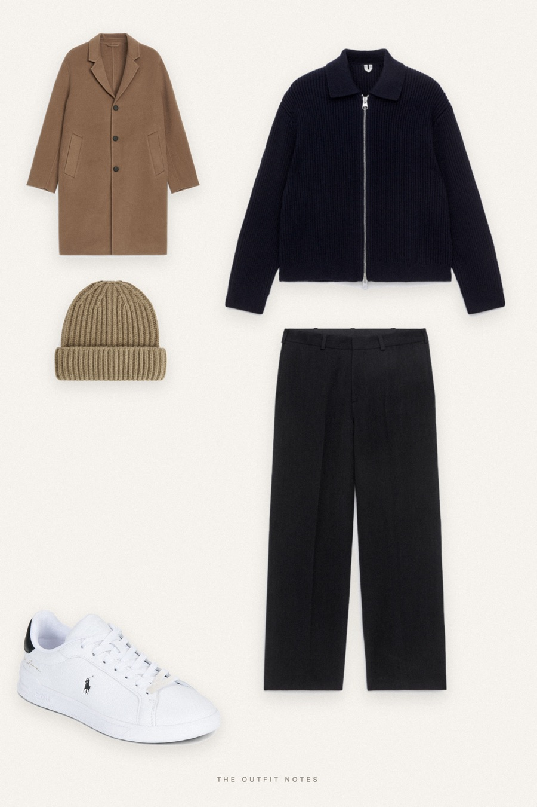

First Snow
camel coat over navy knit

Winter outfit men can wear all season: ARKET relaxed wool topcoat in camel over a navy wool-cotton zip cardigan, charcoal loose-fit wool trousers with a clean drape, white Polo Ralph Lauren sneakers and a beige ribbed beanie. A quiet luxury menswear look for Paris mornings and cold city walks.
The pieces
This page contains affiliate links: if you buy through them, we may earn a commission at no extra cost to you. Disclosure.
 ARKET
ARKET
Camel wool topcoat
Shop ARKET
ARKET
Navy textured zip cardigan
Shop ARKET
ARKET
Charcoal loose wool trousers
Shop Polo Ralph Lauren
Polo Ralph Lauren
White leather court sneakers
Shop ARKET
ARKET
Beige ribbed wool beanie
Shop
Prices are indicative, taken when the look was published, and may have changed. Pictures of the outfit are AI-generated illustrations of real products; the product photos are the retailers' own.
Published 1 October 2026.